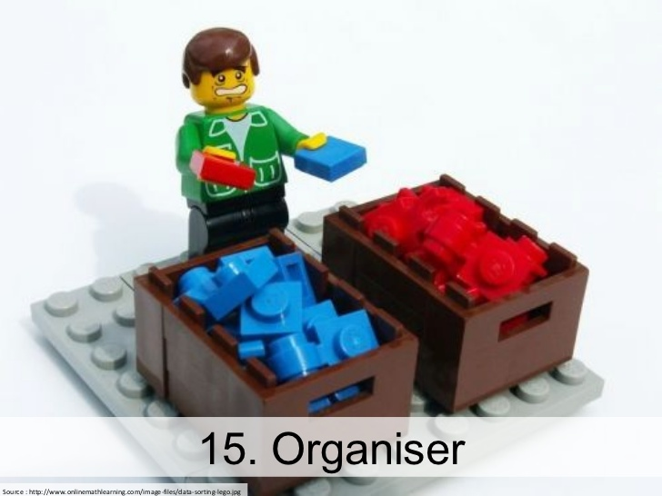

Recently, I was reading Algorithms To Live By, a book that provided an interesting perspective on life, and a sense of comfort for a person who finds ~peace~ in surety. In the book, Brian Christian and Tom Griffiths write about a variety of different algorithms and how they've come about, and also the ways in which they express themselves in daily life. One of these mentioned is the Last Recently Used approach to Random Eviction for data caching. LRU is claimed to be a great approach, as it has the ability to accurately recognize unused data and sort memory accordingly.
Algorithms To Live By makes an analogy to LRU with Martha Stewart's method for organizing a closet, where you order your clothing based on what you use the most, and get rid of what you don't use at all. But what if reordering a less worn shirt to the back of your closet results in you taking a longer time to look for it when you actually need it? And longer than the time saved by the organization all together?
One way this challenge expresses itself is in the way MacBook's screen spaces automatically order themselves. Say I have 4 spaces in use, then the order of the screens will adjust based on which screens are used most. So if I have Sketch open in Space 2 and Chrome open in Space 4, and then begin to using Chrome more, Space 4 will move to Space 1. This reordering updates continuously throughout the time the computer is in use. The problem I see here that I think highlights a larger issue with LRU approaches is that this conflicts directly with the brain's approach to short term memory. The screens get updated to reflect frequency of use, but the brain doesn't know this is happening. So when you go back to Space 4 to access Chrome and it isn't there because it was moved to Space 1, you are wasting that minuscule amount of time that the MacBook attempted to save you by ordering screens in the first place. So that's annoying, in what seems like a very petty way.
My overall feeling about the LRU approach and it's use for various products and situations in life is that it is a great thing. Martha was right! Putting the clothing you wear most in the front of your closet does save time. But this approach is not the right one for everything, and I feel it can be a detriment in situations where it directly conflicts with and confuses a user's short term memory.